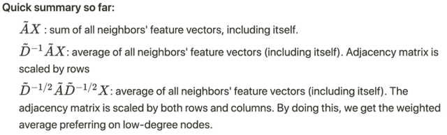
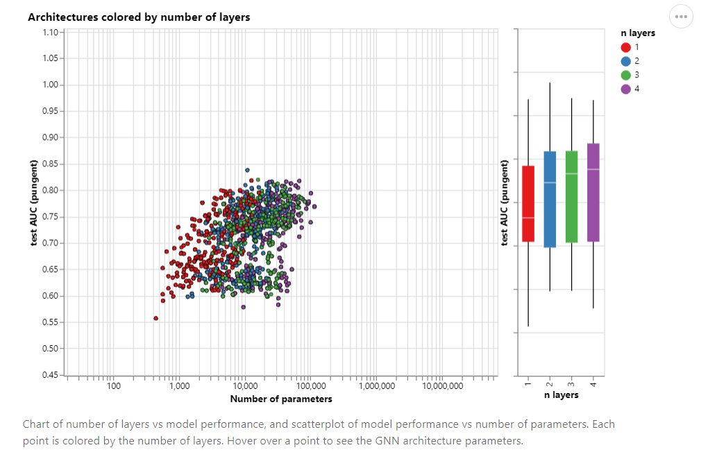
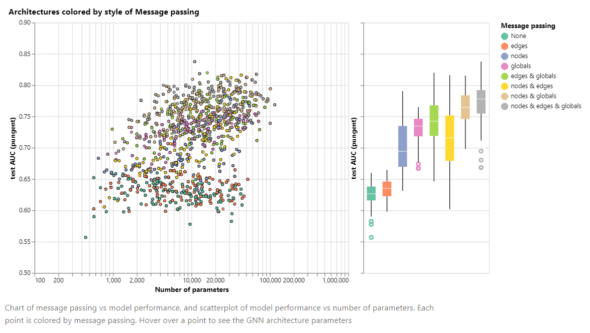
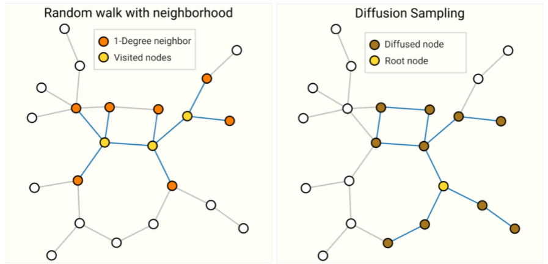

# GCN 学习笔记
# 1.GCN 简介
基于图卷积网络 GCN 的文本数据处理
由于空域卷积需要在图的每层进行邻居特征的聚合，因此每聚合一次就会削弱节点自身的特征。由于空域卷积需要在图的每层进行邻居特征的聚合，因此每聚合一次就会削弱节点自身的特征。为避免这个问题，聚合类空域方法的图神经网络通常只有两到三层。
本项目搭建一个两层结构的 GCN 模型，规定特征向量长度并载入特征工程的输出向量数据。每层的节点特征更新过程是：使用一个 AGG 函数对节点的一阶邻居节点向量进行聚合，得到第 k 轮聚合后的向量编码，求平均值。在 GCN 模型中，节点的特征变换是逐层进行的。
在 GCN 的训练过程中，划分为训练集和验证集，从训练集中随机取样，循环喂给网络。GCN 网络依次进行特征变换和邻居聚合，通过交叉熵计算预测值与真实值的损失，然后进行反向传播求导，通过 Adam 优化器调整特征变换网络的各层权重。在数据集中重新取样，反复迭代多个 epoch 直至模型收敛到合适范围内。在训练过程中，还要监测图神经网络在验证集上的性能表现。具体做法是在每轮 epoch 中计算网络对验证集的预测精度和损失值。图卷积神经网络可以类比于卷积神经网络在图像处理的位置。用随机的共享的卷积核得到像素点的加权和从而提取到某种特定的特征，然后用反向传播来优化卷积核参数就可以自动的提取特征，这是 CNN 提取特征的机制。现实中很多重要的数据都是用图的结构存储，例如社交网络信息，知识图谱，蛋白质网络，万维网等。这些图网络，不是整齐的矩阵形式，而是非结构化信息。
- Graph 上的任务
图级别：预测蛋白质分子类别
节点级别：预测节点所属
边级别：预测图中人物之间的关系
节点分类：预测特定节点的类型。
链接预测：预测两个节点是否有联系
社区检测：识别密集联系的节点群落。
网络相似性：两个 (子) 网络的相似性有多大？
在图中，我们有节点特征（代表节点的数据）和图的结构（表示节点如何连接）。
对于节点来说，我们可以很容易地得到每个节点的数据。但是当涉及到图的结构时，要从中提取有用的信息就不是一件容易的事情了。例如，如果 2 个节点彼此距离很近，我们是否应该将它们与其他对节点区别对待呢？高低度节点又该如何处理呢？其实，对于每一项具体的工作，仅仅是特征工程，即把图结构转换为我们的特征，就会消耗大量的时间和精力。
如果能以某种方式同时得到图的节点特征和结构信息作为输入，让机器自己去判断哪些信息是有用的，那就更好了。这就是我们需要图表示学习的原因。

GCN 是一种卷积神经网络，它可以直接在图上工作，并利用图的结构信息。它解决的是对图（如引文网络）中的节点（如文档）进行分类的问题，其中仅有一小部分节点有标签（半监督学习）。如下图所示：

- 主要思想
就像 "卷积" 这个名字所指代的那样，这个想法来自于图像，之后引进到图（Graphs）中。然而，当图像有固定的结构时，图（Graphs）就复杂得多。从图像到图形的卷积思想：

- GCN 的基本思路：对于每个节点，我们从它的自身和其所有邻居节点处获取其特征信息。假设我们使用 average () 函数。我们将对所有的节点进行同样的操作。最后，我们将这些计算得到的平均值输入到神经网络中。
在下图中，我们有一个引文网络的简单实例。其中每个节点代表一篇研究论文，同时边代表的是引文。我们在这里有一个预处理步骤。在这里我们不使用原始论文作为特征，而是将论文转换成向量（通过使用 NLP 嵌入，例如 tf-idf）。NLP 嵌入，例如 TF-IDF)。
让我们考虑下绿色节点。首先，我们得到它的所有邻居的特征值，包括自身节点，接着取平均值。在 GCN 中，我们仅仅使用一个全连接层。在这个例子中，我们得到 2 维向量作为输出（全连接层的 2 个节点）最后通过神经网络返回一个结果向量并将此作为最终结果。

在实际操作中，我们可以使用比 average 函数更复杂的聚合函数。我们还可以将更多的层叠加在一起，以获得更深的 GCN。其中每一层的输出会被视为下一层的输入。2 层 GCN 的例子：第一层的输出是第二层的输入。同样，注意 GCN 中的神经网络仅仅是一个全连接层。

- 数学原理
我们考虑图 G，如下图所示。
从图 G 中，我们有一个邻接矩阵 A 和一个度矩阵 D。同时我们也有特征矩阵 X。
那么我们怎样才能从邻居节点处得到每一个节点的特征值呢？解决方法就在于 A 和 X 的相乘。
看看邻接矩阵的第一行，我们看到节点 A 与节点 E 之间有连接，得到的矩阵第一行就是与 A 相连接的 E 节点的特征向量（如下图）。同理，得到的矩阵的第二行是 D 和 E 的特征向量之和，通过这个方法，我们可以得到所有邻居节点的向量之和。计算 "和向量矩阵"AX 的第一行：
这里还有一些需要改进的地方：
- 我们忽略了节点本身的特征。例如，计算得到的矩阵的第一行也应该包含节点 A 的特征。
- 我们不需要使用 sum () 函数，而是需要取平均值，甚至更好的邻居节点特征向量的加权平均值。
那我们为什么不使用 sum () 函数呢？原因是在使用 sum () 函数时，度大的节点很可能会生成的大的 v 向量，而度低的节点往往会得到小的聚集向量，这可能会在以后造成梯度爆炸或梯度消失（例如，使用 sigmoid 时）。
此外，神经网络对输入数据的规模很敏感。因此，我们需要对这些向量进行归一化，以摆脱可能出现的问题。在问题（1）中，我们可以通过在 A 中增加一个单位矩阵 I 来解决，得到一个新的邻接矩阵。
取 （使得节点本身的特征和邻居一样重要），我们就有，注意，我们可以把 当做一个可训练的参数，但现在只要把 赋值为 1 就可以了，即使在论文中， 也只是简单的赋值为 1。通过给每个节点增加一个自循环，我们得到新的邻接矩阵：
对于问题 (2): 采用矩阵缩放，我们通常将矩阵乘以对角线矩阵。在当前的情况下，我们要取聚合特征的平均值，或者从数学角度上说，要根据节点度数对聚合向量矩阵 X 进行缩放。直觉告诉我们这里用来缩放的对角矩阵是和度矩阵 D 有关的东西（我们考虑的是新邻接矩阵的度矩阵）。
现在的问题变成了我们要如何对和向量进行缩放 / 归一化？换句话说：
我们如何将邻居的信息传递给特定节点？我们从我们的老朋友 average 开始。在这种情况下， 的逆矩阵（即，）就会用起作用。 的逆矩阵中的每个元素都是对角矩阵 中相应项的倒数。
例如，节点 A 的度数为 2，所以我们将节点 A 的聚合向量乘以 1/2，而节点 E 的度数为 5，我们应该将 E 的聚合向量乘以 1/5，以此类推。
因此，通过 取反和 X 的乘法，我们可以取所有邻居节点的特征向量（包括自身节点）的平均值。
到目前为止一切都很好。但是你可能会问加权平均 () 怎么样？直觉上，如果我们对高低度的节点区别对待，应该会更好。
但我们只是按行缩放，但忽略了对应的列（虚线框）。
为列增加一个新的缩放器。
新的缩放方法给我们提供了 "加权" 的平均值。我们在这里做的是给低度的节点加更多的权重，以减少高度节点的影响。这个加权平均的想法是，我们假设低度节点会对邻居节点产生更大的影响，而高度节点则会产生较低的影响，因为它们的影响力分散在太多的邻居节点上。
在节点 B 处聚合邻接节点特征时，我们为节点 B 本身分配最大的权重（度数为 3），为节点 E 分配最小的权重（度数为 5）。
因为我们归一化了两次，所以将 "-1" 改为 "-1/2"

例如，我们有一个多分类问题，有 10 个类，则 被设置为 10。在第 2 层有了 10 个维度的向量后，我们将这些向量通过一个 softmax 函数进行预测。
省略从傅立叶变换到拉普拉斯算子到拉普拉斯矩阵的数学推导，对于任何一个图卷积层都可以写成一个非线性函数
代表第一层的输入，N 为图的节点个数，D 为每个节点特征，A 为邻接矩阵。
构建一个两层的 GCN，激活函数分别采用 ReLU 和 Softmax，整正向传播公式为
Loss 函数的计算方法很简单，就是通过对所有有标签的例子的交叉熵误差来计算，其中 是有标签的节点的集合。
# layers 的含义
层数是指节点特征能够传输的最远距离。例如，在 1 层的 GCN 中，每个节点只能从其邻居那里获得信息。每个节点收集信息的过程是独立进行的，对所有节点来说都是在同一时间进行的。
当在第一层的基础上再叠加一层时，我们重复收集信息的过程，但这一次，邻居节点已经有了自己的邻居的信息（来自上一步）。这使得层数成为每个节点可以走的最大跳步。所以，这取决于我们认为一个节点应该从网络中获取多远的信息，我们可以为 layers 设置一个合适的数字。但同样，在图中，通常我们不希望走得太远。设置为 6-7 跳，我们就几乎可以得到整个图，但是这就使得聚合的意义不大。
例： 收集目标节点 i 的两层信息的过程
GCN 应该叠加几层？
在论文中，作者还分别对浅层和深层的 GCN 进行了一些实验。在下图中，我们可以看到，使用 2 层或 3 层的模型可以得到最好的结果。此外，对于深层的 GCN（超过 7 层），反而往往得到不好的性能（虚线蓝色）。一种解决方案是借助隐藏层之间的残余连接（紫色线）。
不同层数的性能。图片来自论文 [3]
GCNs 用于图上的半监督学习。GCNs 同时使用节点特征和结构进行训练 GCN 的主要思想是取所有邻居节点特征（包括自身节点）的加权平均值。度低的节点获得更大的权重。之后，我们将得到的特征向量通过神经网络进行训练。我们可以堆叠更多的层数来使 GCN 更深。考虑深度 GCNs 的残差连接。通常，我们会选择 2 层或 3 层的 GCN。
数学笔记：当看到对角线矩阵时，要想到矩阵缩放。这里有一个使用 StellarGraph 库的 GCN 演示 [5]。该库还提供了许多其他 GNN 的算法。该框架目前仅限于无向图（加权或不加权）。但是，可以通过将原始有向图表示为一个无向的两端图，并增加代表原始图中边的节点，来处理有向边和边特征。
对于 GCN，我们似乎可以同时利用节点特征和图的结构。然而，如果图中的边有不同的类型呢？我们是否应该对每种关系进行不同的处理？在这种情况下如何聚合邻居节点？最近有哪些先进的方法？如何处理边的不同关系（兄弟、朋友、......）？
参考文献
[1] Excellent slides on Graph Representation Learning by Jure Leskovec (Stanford): https://drive.google.com/file/d/1By3udbOt10moIcSEgUQ0TR9twQX9Aq0G/view?usp=sharing
[2] Video Graph Convolutional Networks (GCNs) made simple: https://www.youtube.com/watch?v=2KRAOZIULzw
[3] Paper Semi-supervised Classification with Graph Convolutional Networks (2017): https://arxiv.org/pdf/1609.02907.pdf
[4] GCN source code: https://github.com/tkipf/gcn
[5] Demo with StellarGraph library: https://stellargraph.readthedocs.io/en/stable/demos/node-classification/gcn-node-classification.html
# 图兼容神经网络的挑战
主要挑战是怎么表示节点之间的连接
使用邻接矩阵的问题：
复杂度过高：节点的数量通常很多，邻接矩阵的自然就更大了
排序不变性：不同的邻接矩阵在很多情况下表达的是一个图，如下面的例子中，两个图所表达的社交网络的人物之间关系并没有发生变化，但是邻接矩阵表达的结果却完全不同

# 2、GNN 是怎么预测的
GCN 为图卷积神经网络，其为 GNN 的一种，区别主要在于采用卷积算子进行信息汇聚。
a、对节点预测
我们已经有了一个最简单的 GNN，预测阶段直接将顶点的向量输入到对应的 GNN 中（在这个最简单的 GNN 中，其实就是输入到其中一个 MLP），输出的结果再加一个线性分类器（当然，也可以使用其他分类器，只要适合于对应任务就可以）就可以做分类了。

b、pooling 技术
很多情况下我们只有边的信息，而没有节点的信息，这时我们在想要获取节点向量时（预测阶段），就要使用 pooling 技术。
如上图，某一个节点的向量由其相关的边向量及全局向量加和而来；
类似的，在我们只有节点向量而需要边向量时、只有节点向量而需要全局向量时，都可以采用类似的思路，下面三张图分别代表了以上三种情况的 pooling 细节
边传给节点↑
节点传给边↑

节点传给全局↑
c、在图中传递信息
上一部分介绍的只有在预测阶段，由于没有顶点向量才使用的 pooling 技术，事实上，为了 “传递顶点之间的消息”，pooling 技术应当使用在 GNN 网络中
上图中的 过程就是使用 pooling 变换顶点向量的过程，这个过程如下图，和上一部分介绍的很相似，只是每一个顶点的向量表示变换成了和其他顶点向量加和的结果
d、更好的边 / 节点的向量表示（消息传递）
上面部分我们介绍过在只有边的向量，而没有节点向量的情况下，我们如何使用 pooling 技术在预测阶段解决这个问题；这一部分我们介绍如何获得更好的带有 “消息传递” 的节点 / 边的向量，将这一 pooling 融合到 GNN 中（即使我们不缺边 / 节点向量）；
注意：与 c 部分不同，这一部分重点强调【边到节点】/【节点到边】的消息传递。
怎么进行节点 - 边之间的消息传递？
如下图， 和 都是类似于上面的 消息传递 pooling 函数，不同之处在于加和的对象发生了变化（ 表示一个边的向量由其相连的两个节点向量与其自身进行加和（concat 也可以），这个过程中边和节点的向量维度可能不一样，进行一个投影即可）
消息传递的先后
上图中是先进行点 -> 边，再进行边 -> 点的消息传递，还有其他的方式，如下图：先点后边、先边后点、融合进行（Molecular graph convolutions: moving beyond fingerprints ）
e、将全局信息 U 加入到消息传递
为什么要有全局向量 U？
很多时候一个图是很大的，这个时候如果希望获得很远的消息传递是很困难的，如果使用全连接的方式进行会造成很大的复杂度且不合适，这个时候就需要一个虚拟的节点，这个虚拟节点和所有的点相邻、和所有的边相连；这样就保持了一个远距离消息传递的可能性；（这也是为什么前面的预测示意图中会出现 U 的原因，U 作为一个虚拟节点要加入到其他所有节点 / 边的预测阶段）
全局向量 U 怎么和 V、E 消息传递？
我们就把这个全局向量 U 视作一个虚拟节点向量，像其他节点一样参与到节点 - 边的消息传递中；（举例来说，对一个节点，我们可以得到其相邻节点传来的向量，相邻边的向量以及全局向量）最后我们还要完成全局 - 节点、全局 - 边的消息传递（也就相当于多进行了一次节点 - 节点、节点 - 边的消息传递）
预测阶段，比如要预测节点，把它附近的节点、边以及全局向量一起拿过来（投影后加和或是 concat 都可），再输入到训练好的 GNN 中，输出层加一个分类器，得到结果；
作者还提到，concat 的方式更适合使得新节点适应整个网络（To condition the new node embedding on all these possible sources of information, we can simply concatenate them. ）；而投影后加和的方式中还可以再多加一个 feature-wise modulation layer（Feature-wise transformations V. Dumoulin, E. Perez），很像 transformer 中的 attention 机制.
作者还提供了一个 playgorund，以及解释各种超参数的影响，但是和 GNN 理论介绍关系不大
向量维度的影响
上图是三种向量的维度对精度（AUC）的影响（其实也没有很大，因为方差很大）

GNN 层数的影响
上图是 GNN 层数的影响，右边部分可以看到层数增加会使得精度提高，但是方差依然很大

汇聚操作的影响
上图是消息传递后 aggregation 的操作的影响

消息传递方式的影响
# 其他与 GNN 相关的话题
下面介绍的话题都是一些 open research question，想要对 GNN 做进一步研究都可以从中找到一些可能的方向。
# 1、其他类型的图
左图是多种边的图、右图是多层图
上图示意了多种边的图与多层图的例子
# 2、图的采样与 batching
layer 0 的节点能看到 layer 3 很多节点
GNN 最后一层一个顶点能看到很多点（如上图所示，layer 0 的节点会看到 layer 3 的所有节点），甚至是整个图的所有点，这会带来计算梯度时要把整个图的中间结果保存下来，这会带来很大的复杂度，因此需要采样，采样的方法有：①随即节点采样、②随机游走的方式、③边随机游走边把邻居找出来、④固定宽度遍历找一个子图（具体哪一个比较好取决于这个图的特点）
①和②

③和④
怎么采样依然是一个重要的问题。同样，怎么给定这些很多小的子图放到一起进行 tensor 的并行计算也是一个重要的问题。
# 3、Inductive biases
a、什么是 inductive biases
我们拿到一个数据总是希望更好地利用其中的特征信息，并得到更好的预测效果、更少的训练时间、更少的参数以及更好地泛化性；对于一个 image 来说，我们总是希望图中地主要主体无论在图的哪个位置，我们依然希望能够识别出来，因此出来了 CNN 的方式；对于文本，一个词所在的位置不同可能会造成语义的变化，因此出现了序列处理的方式；
b、一个 graph 的 inductive biase
对于一个图，我们关系节点之间的邻接关系，并希望我们使用的数据结构能够清晰地表达这种邻接关系，同时保持图的对称性（顶点顺序交换后依然一样）；这意味着我们在设计对节点或边（比如我们用前文的邻接列表的方式表示连接关系）的变换时，应当做到操作顺序无关紧要（否则的话就表示节点的顺序影响到了我们的结果，这不符合要求）
# 4、消息传递中 aggregation 的比较
其实无论是 sum、还是 max、min 都各有好坏，主要是看适不适合（There is no operation that is uniformly the best choice. & domain specific aggregation operations can also be designed.）
# 5、将 GCN 近似地看作是多个子图
GCN（图卷积网络）就是我们进行了汇聚操作的多层的 GNN（也就是加了各种消息传递后的 GNN）
一个 GCN 往往包含 k 层，每深入一层，看到的节点其实就多一步，这样其实在一开始枚举所有子图与通过一个 GCN 的结果往往是近似的（enumerating these subgraphs from the beginning vs building them dynamically as in a GCN, might be prohibitive.）
# 6、剩余部分
a、点看成边 / 边看成点
点看成边，边看成点后的图叫对偶图，对偶图与原来的图相比，邻接关系表其实是不变的，这样就代表我去做边的分类，也可以在其对偶图上做卷积并分类（Dual-Primal Graph Convolutional Networks）
b、图的卷积是矩阵乘法，矩阵乘法是在图上行走
具体的卷积、汇聚、游走等怎么用矩阵实现
c、图上的汇聚操作后的注意力机制
这里是前面提到的注意力机制的使用
注意力机制
d、图的可解释性
主要关注实际应用中，用 GNN 时如何做到可解释性以更好地适用到实际问题
e、图的生成问题
怎么对图有效建模做生成问题
评价：交互式图很有利于理解，图神经网络很强大，强大在几乎所有的问题都能表示成 graph，但是由于其稀疏性也带来了很多加速计算的问题；怎么采样，怎么优化，图的架构如何，怎么聚集操作对于效果影响很大（很敏感），所以实际上非常具有挑战性。也就导致了工业界的应用其实很少，并不完善。